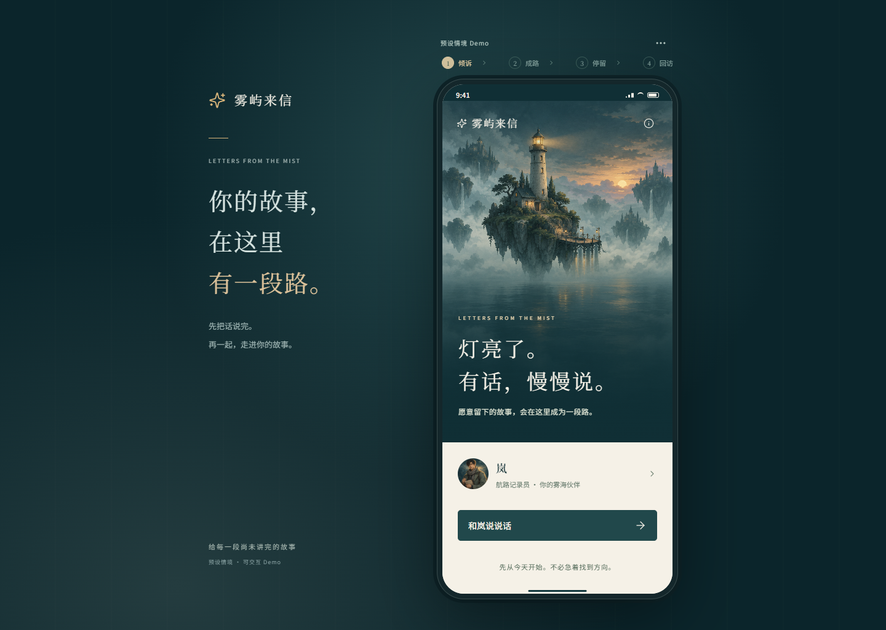
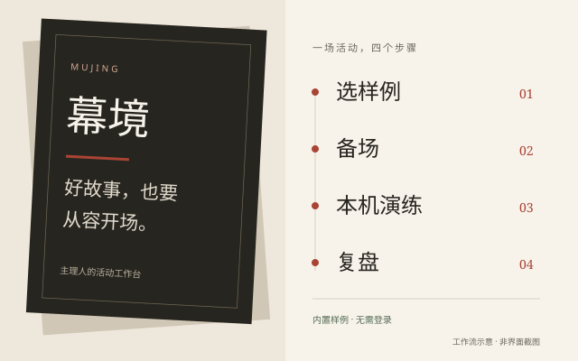
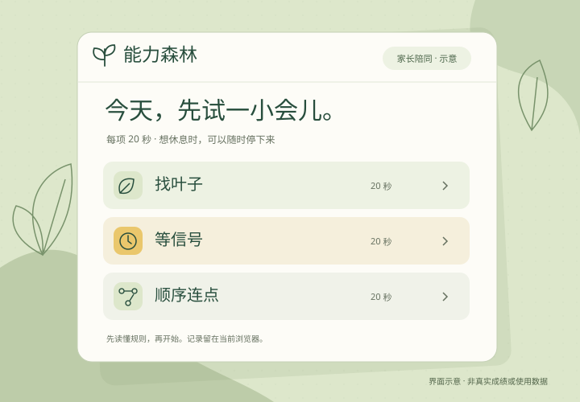
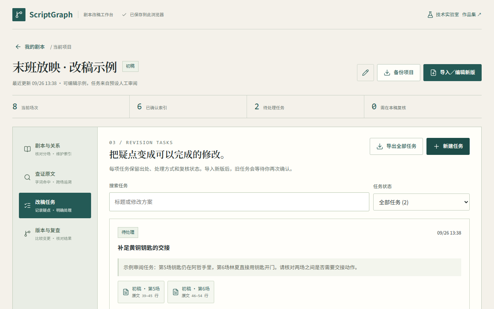
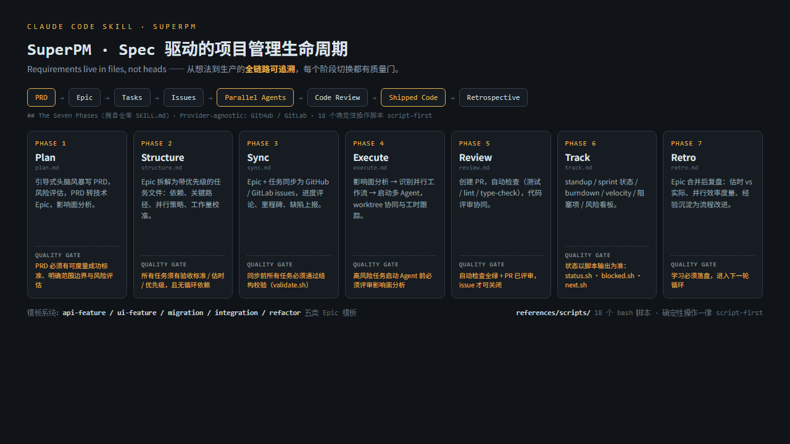
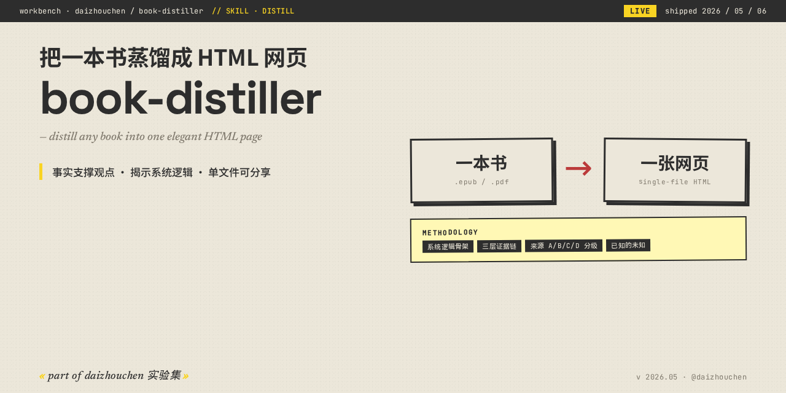
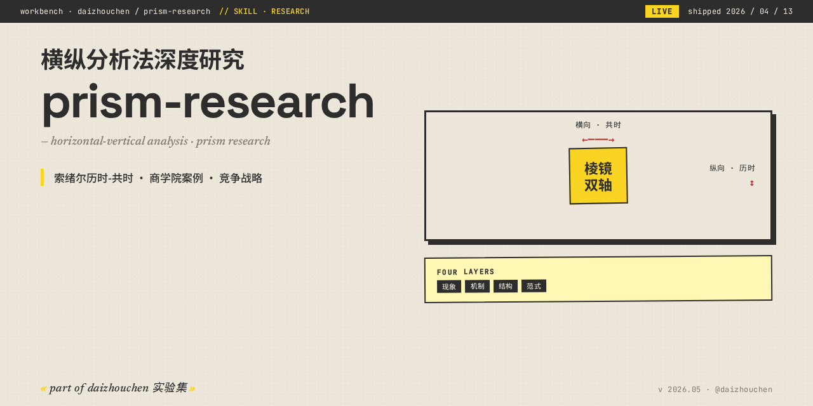
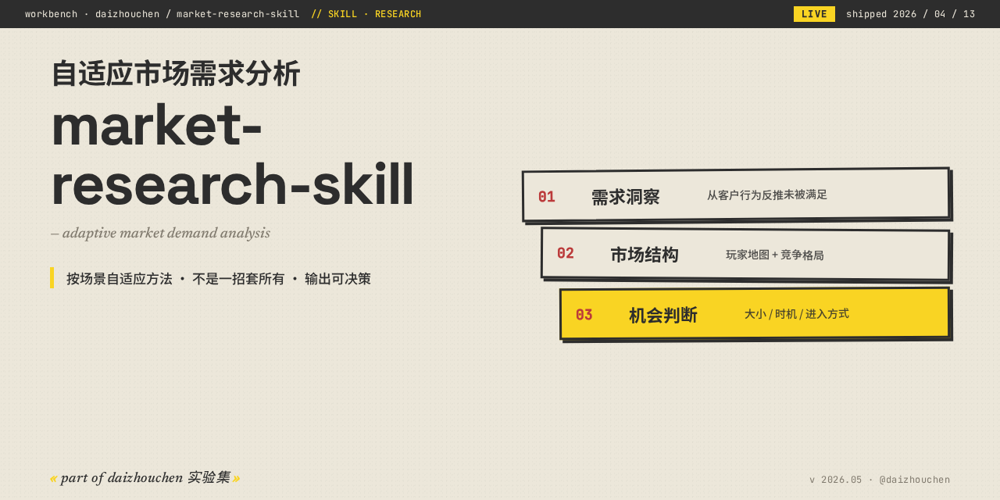
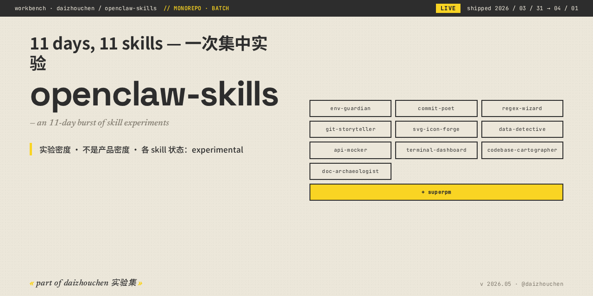
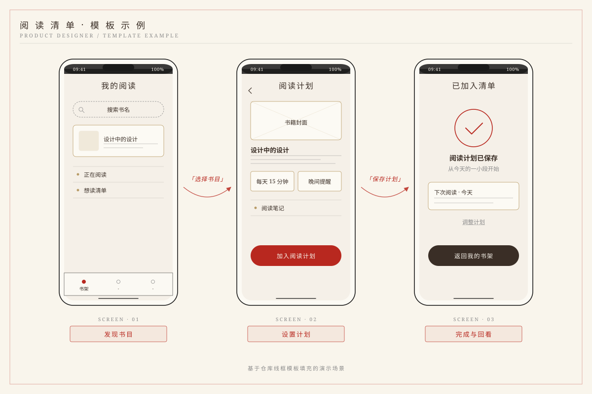

把角色任务串成流程
从商家接入、选品与询盘，到交易流转，定义各方在每一步要完成的事。
AI 产品经理 / 独立实验者。曾主导 UniTrade（AI Native B2B 跨境贸易）创业，现在持续做一批小实验——用研究的方式做产品，用产品的方式做研究。从真实上线的产品，到可以亲手体验的原型与工程实践。
B2B CROSS-BORDER COMMERCE
一段真实上线的跨境 B2B 创业实践。我独立承担产品设计、业务流程、数据治理与工程交付，把供应商、采购方和平台运营连接在同一套系统里。
从商家接入、选品与询盘，到交易流转，定义各方在每一步要完成的事。
统一商品、规格、类目与属性的表达，让历史资料和新增供给进入同一套规范。
完成前后端实现、部署上线与持续迭代，把产品判断落实到可运行的业务链路。
这里展示产品职责与交付范围。具体商品、供应商资料及经营数据不公开。
从陪伴、活动到亲子互动与故事体验。每个作品都从具体场景出发，提供可走通的公开体验与产品案例。



既有可体验的 AI 工程项目，也有来自实际交付与研究的积累：知识组织、模型运行、实验对照与系统部署。

将项目资料、实体关系和模型服务接到同一条问答链路中，并完成受限环境下的部署与交付。
围绕健康对照、前驱期与帕金森病三组代谢组学数据，开展分类研究，探索候选代谢特征与模型表现。
研究实验档案；原始合作数据未公开，结果不作为临床诊断能力的证明。
把产品研究、方案设计与工程执行中的重复步骤，沉淀为可复用的工作流。精选公开仓库，配图展示仓库介绍或模板示例。

给 AI Agent 用的 spec 驱动项目管理框架：7 阶段生命周期、质量门、风险管理与并行执行。

把书籍、电影和领域知识整理成结构清晰的单页 HTML，便于理解、回看与分享。这里收录 book、movie、domain 三个方向。

围绕产品、公司、概念与技术开展多层次研究，结合横向比较和历史脉络，整理可追溯来源的研究报告。

按可用数据源规划市场调研，交叉核对需求与竞争信息，输出区分事实、推断和数据缺口的报告。

面向日常开发的工具合集：模拟 API、梳理代码库、分析数据与整理 Git 变更，把重复的工程任务组织成可调用的工作流。

将产品想法整理为可阅读的设计稿，按场景调用理论卡与预制图形模板，覆盖用户、流程和界面表达。
更多公开 Skill：wechat-mp-writer · tool-mastery · svg-icon-forge · ppt-master —— 可在 GitHub 主页查看仓库与使用说明。
先动手，再沉淀，最后交付。按交付时间倒序，每条附关键交付物。
把 35 个仓库梳理成站点 + 展示页 + Profile README 三层叙事，全部自托管、无外链依赖。
独立负责商家接入、数据治理、选品匹配、询盘交易到平台上线运维，创业期间 unitrade.shop 上线运营。建立统一的商品规范、分类与属性体系，并完成历史商品迁移。
沉浸式活动引擎 MVP v7.2：14-pass 多视角生成流水线 + 实时 harness，30 篇生成文档留档。
围绕书籍、电影与领域知识构建蒸馏工具，并将产品分析方法沉淀为 claude-product-designer 可复用设计流程。
prism-research 深度调研、wechat-mp-writer、ppt-master、market-research-skill —— 一周内密集落 4 个方向。
SuperPM + 10 个 OpenClaw 开发者 Skill，一次关于"Skill 工程化"的集中实验，后合并为聚合仓库。
轻互动练习 MVP V1.2.1，完成微信小程序与 CloudBase 原型交付，留有开发版上传记录。
代谢组学疾病的机器学习建模：特征工程 + 多模型对比，最早的公开仓库。